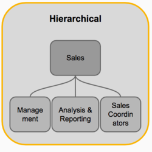
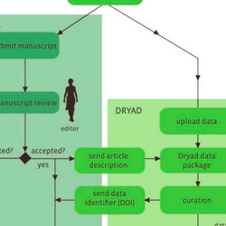
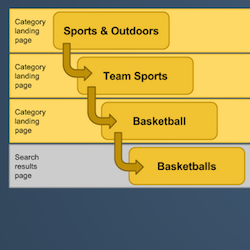
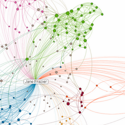
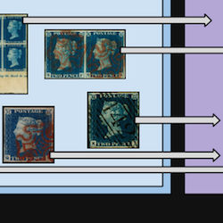
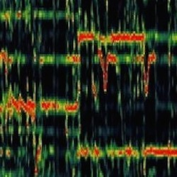
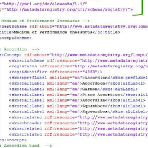

Portfolio
As an information scientist, I work to improve user access to information, on the Web and otherwise. My specific focus is on user research & user-centered design, metadata standards and taxonomies, bringing stucture to data and the language used by experts and novices in a given field. I thrive in a diverse environment of designers, engineers and users.
Presentations
-  Ontology Design 101
- Intro to Wikidata & SPARQL
-  Data curation at Dryad: a former curator's perspective
- Flying solo: data librarians outside {traditional} libraries
-  Taxonomies for eCommerce
-  Intro to graph databases
-  Intro to Oreo, a master data management system for collectibles
- Linked data & the Medium of Performance Thesaurus
-  Intro to music information retrieval
-  The Library of Congress Medium of Performance Thesaurus
- Intro to Philately
- Stamp collectors: who are they?
Writing
Toolbox
The tools listed here are what I'm currently using or playing around with on-the-job or elsewhere.
Prodigy Annotation Tool
The ontology and data science practices at SEEK work together to develop and train models for named entity recognition in order to improve ontology web services that are used across the business. We use Prodigy to capture those annotations in a machine-friendly format.
PoolParty Semantic Suite
At SEEK, we use PoolParty to house, manage, and share our in-house employment market ontology.
Solr Administrative User Interface
While at ANDS, I used the schema browser and querying functionality of Solr's admin UI to research how controlled and uncontrolled subject tags are being used in a registry for Australian research data.
OpenRefine
Using the knowledge gained (and data collected) by querying the RDA Solr index, I used OpenRefine to match user-provided tags to appropriate controlled vocabularies available via web services. (Read more about fetching URLs from web services and GREL, the General Refine Expression Language).
oXygen XSLT Debugger
Leveraging code written by my awesome colleagues at ANDS, I learned XSL on-the-job by transforming metadata about research data from bespoke XML for ingestion into a registry for Australian research data.
Schema.org
I've encoded my website using elements from the Schema.org vocabulary in order to make it easier for machines (like the Google search engine) to understand. (Read more about structured data and rich snippets here and I also recommend this great article by Jason Ronallo on applications for libraries).
Font Awesome
In order to learn more about CSS toolkits, I've made use of the Font Awesome icon library to make my website look spiffy.